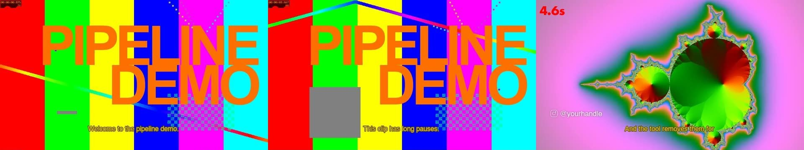

Title, captions, and a cutaway on the word "pauses".

Left to right: the title with the first caption, the title with the second caption, then the cutaway and lower third. All generated from the plan on the first slide.
Synthetic material. No people, no personal files.4 / 5